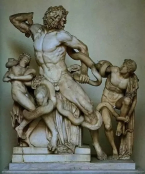

真题 · 论述类文本阅读
诗画异质
两则材料从拉奥孔雕像、史诗和中国诗画事例辨析空间艺术与时间艺术的表现范围。
导读
文体与题材：两则美学论说选段，围绕诗与绘画的媒介、题材和表现方式展开比较。
作者与材料分工：朱光潜选段阐释莱辛的诗画理论；钱锺书选段联系中国古代诗画论、笔记和诗歌，讨论绘画表现时间的限度。
文本出处：2021年新高考全国Ⅰ卷第1—5题；材料一摘编自朱光潜《诗论》，材料二摘编自钱锺书《读〈拉奥孔〉》。
内容脉络：材料一从《拉奥孔》引出诗画异质说，追溯史诗与雕像三处差异的解释，归纳媒介和题材的关系，再用日常事例说明并补充两种艺术间接表现其他题材的方式。材料二先联系中国古人的类似说法，继而说明莱辛将诗画分别与时间、空间相联系的深入之处，最后借《按乐图》传说及徐凝诗具体辨析瞬间与连续过程。
内容主旨：诗与绘画的表现媒介不同，各有适宜的题材；两者能够间接表现各自不擅长的对象，但绘画呈现瞬间物态与诗歌展开连续动作仍有差别。
阅读重点：区分“适宜表现”与“绝对不能表现”，比较瞬间的空间排列和时间上的先后承续，核查引例能够支持的具体判断。
原文与随文研读
原文按结构分节；随文内容可定位至对应段落。
材料一：莱辛通过《拉奥孔》论证诗画异质，指出两种艺术表现动作与物态的不同方式。
十八世纪德国学者莱辛的《拉奥孔》是近代诗画理论文献中第一部重要著作。从前人们相信诗画同质，直到莱辛才提出丰富的例证，用动人的雄辩，说明诗画并不同质。
据传说，希腊人为了夺回海伦，举兵围攻特洛伊城，十年不下。最后他们佯逃，留着一匹腹内埋伏精兵的大木马在城外，特洛伊人看见木马，把它移到城内。典祭官拉奥孔当时极力劝阻，说留下木马是希腊人的诡计。他这番忠告激怒了偏心于希腊人的天神。当拉奥孔典祭时，河里就爬出两条大蛇，把拉奥孔和他的两个儿子一齐绞死了。
这是罗马诗人维吉尔《伊尼特》第二卷里最有名的一段。十六世纪在罗马发现的拉奥孔雕像似以这段史诗为蓝本。莱辛拿这段诗和雕像互较，发现几个重要的异点。因为要解释这些异点，他才提出诗画异质说。
据史诗，拉奥孔在被捆时放声号叫；在雕像中他的面孔只表现一种轻微的叹息，具有希腊艺术所特有的恬静与肃穆。为什么雕像的作者不表现诗人所描写的号啕呢？希腊人在诗中并不怕表现苦痛，而在造型艺术中却永远避免痛感所产生的面孔筋肉挛曲的丑状。在表现痛感之中，他们仍求形象的完美。

其次，据史诗，那两条长蛇绕腰三圈，绕颈两圈，而在雕像中它们仅绕着两腿。因为作者要从全身筋肉上表现出拉奥孔的苦痛，如果依史诗，筋肉方面所表现的苦痛就看不见了。同理，雕像的作者让拉奥孔父子赤裸着身体，虽然在史诗中拉奥孔穿着典祭官的衣服。
莱辛推原这不同的理由，作这样一个结论：“图画和诗所用的模仿媒介或符号完全不同，图画用存于空间的形色，诗用存于时间的声音。……全体或部分在空间中相并立的事物叫作‘物体’，物体和它们的看得见的属性是图画的特殊题材，全体或部分在时间上相承续的事物叫作‘动作’，动作是诗的特殊题材”。
换句话说，画只宜于描写静物，诗只宜于叙述动作。静物各部分在空间中同时并存，这种静物不宜于诗，因为诗的媒介是在时间上相承续的语言。比如说一张桌子，画家只需用寥寥数笔，使人一眼看到就明白它是桌子。如果用语言来描写，你须从某一点说起，说它有多长多宽等等，说了一大篇，读者还不一定马上就明白它是桌子。
诗只宜叙述动作，因为动作在时间上先后相承续，而诗所用的语言声音也是如此。这种动作不宜于画，因为一幅画仅能表现时间上的某一点，而动作却是一条绵延的直线。比如说，“我弯下腰，拾一块石头打狗，狗见着就跑了”，用语言来叙述这事，多么容易，但是如果把这简单的故事画出来，画十幅、二十幅，也不一定使观者一目了然。
但是谈到这里，我们不免有疑问；画绝对不能叙述动作，而诗绝对不能描写静物么？莱辛也谈到这个问题，他说：“图画也可以模仿动作，但是只能间接地用物体模仿动作。……诗也能描绘物体，但是也只能间接地用动作描绘物体。”
换句话说，图画叙述动作时，必化动为静，以一静面表现动作的全过程；诗描写静物时，亦必化静为动，以时间上的承续暗示空间中的绵延。
（摘编自朱光潜《诗论》）
材料二：中国诗画论与唐诗实例说明，绘画善于呈现空间中的物态，却难以表现时间中的连续动作。
《拉奥孔》所讲绘画或造型艺术和诗歌或文字艺术在功能上的区别，已成老生常谈了。它的主要论点——绘画宜于表现“物体”或形态，而诗歌宜于表现“动作”或情事，中国古人也浮泛地讲过。晋代陆机分划“丹青”和“雅颂”的界限，说：“宣物莫大于言，存形莫善于画。”这里的“物”是“事”的同义字。邵雍有两首诗说得详细些：“史笔善记事，画笔善状物，状物与记事，二者各得一”；“画笔善状物，长于运丹青。丹青入巧思，万物无遁形。诗笔善状物，长于运丹诚。丹诚入秀句，万物无遁情”。
但是，莱辛的议论透彻深细得多，他不仅把“事”“情”和“物”“形”分开，还进一步把两者各和时间与空间结合；作为空间艺术的绘画、雕塑只能表现最小限度的时间，所画出、塑出的不可能超过一刹那内的物态和景象，绘画更是这一刹那内景物的一面观。我联想起唐代的传说：“客有以《按乐图》示王维，维曰：‘此《霓裳》第三叠第一拍也。’客未然，引工按曲，乃信。”宋代沈括《梦溪笔谈》批驳了这个无稽之谈：“此好奇者为之。凡画奏乐，止能画一声。”“止能画一声”五字也能帮助我们了解一首唐诗。徐凝《观钓台画图》：“一水寂寥青霭合，两崖崔崒白云残。画人心到啼猿破，欲作三声出树难。”画家挖空心思，终画不出“三声”连续的猿啼，因为他“止能画一声”。徐凝很可以写“欲作悲鸣出树难”，那不过说图画只能绘形而不能“绘声”，他写“三声”，寓意精微，就是莱辛所谓绘画只表达空间里的平列，不表达时间上的后继，所以画家画“一水”加“两崖”的排列易，画“一”而“两”，“两”而“三”的连续“三声”难。
（摘编自钱锺书《读〈拉奥孔〉》）
第1题 · 内容理解
1．下列对材料相关内容的理解和分析，不正确的一项是（3分）
A．莱辛是历史上质疑“诗画同质”观念的第一人，他的《拉奥孔》在近代诗画理论中产生了广泛影响。
B．雕塑《拉奥孔》既呈现了拉奥孔被缠绞的表情，又不让这表情表现为丑态，体现了希腊艺术恬静与肃穆的一面。
C．雕塑《拉奥孔》与史诗记载的不同主要体现在三处：一是拉奥孔的表情，二是大蛇缠身的部位，三是人物穿衣与否。
D．莱辛的《拉奥孔》认为，由于诗和画拥有不同的媒介和符号，所以形成了各擅胜场的题材范围。
参考答案1展开 / 收起
参考作答
A。
审题与考查点
题干要求选“不正确”的一项。核查对象包括莱辛的理论地位、雕塑与史诗的比较和媒介与题材的关系，尤其注意“第一人”与“第一部重要著作”的判断对象不同。
文本分析
A项查看证据 ↗
A项不符合。“第一部重要著作”说的是著作在近代诗画理论文献中的地位；“历史上质疑……的第一人”说的是所有时代思想家的先后。材料二还列举了陆机、邵雍关于言与画、记事与状物的区分，不能把莱辛的系统论证等同于历史上的最早质疑。
B项查看证据 ↗
B项符合。史诗写拉奥孔“放声号叫”，雕像却只呈现“轻微的叹息”；材料随即解释，造型艺术要避免面部筋肉挛曲的丑状，在痛感中仍求形象完美。这正支持选项对痛苦表情与恬静肃穆相协调的概括。
C项查看证据 ↗
C项符合。材料先比较号叫与叹息两种表情，再比较蛇缠腰颈与缠腿的部位差异，最后比较穿典祭官衣服与赤裸身体。三项均有对应语句，不能只凭一处蛇的描写判断整项。
D项查看证据 ↗
D项符合。材料先指出图画用空间中的形色、诗用时间中的声音，再分别界定空间并立的物体和时间承续的动作，说明媒介差别与特殊题材的对应关系。选项说的是各自擅长的范围，没有把这种区分说成绝对禁限。
知识点
解题方法
先将各项拆成可核对的判断，再分别回到材料一开篇、史诗与雕塑比较段和媒介结论段；检查A项时还须联系材料二关于中国古人的论说。
易误辨析
不能只看“直到……才”便断定莱辛是历史第一人，也不能只验证C项的蛇缠部位便认定整个复合选项成立。
答案组织与检核
本题选A。复核B、C、D各判断均有相应原句支持；A项失误在把系统论证的地位扩大为全部思想史上的最先质疑。
第2题 · 观点推断
2．根据材料内容，下列说法正确的一项是（3分）
A．由于诗歌是时间的艺术，在描述一件事情时，即使是高明的绘画也不如诗歌来得生动和明白。
B．绘画只能是对所画对象某一瞬间的定格，因此后人根据画作是推想不出所画对象动作的过程的。
C．“红杏枝头春意闹”“春风又绿江南岸”“两山排闼送青来”等诗句，化静为动，以动作来描绘景致。
D．沈括质疑了唐代传说，从这个例子可判断，后人关于王维“诗中有画，画中有诗”的说法其实没有道理。
参考答案2展开 / 收起
参考作答
C。
审题与考查点
题干要求选择能够由两则材料推出的说法。A、B、D含扩展判断，C把材料原则用于诗句；须区分原文直接所述与选项额外推出的结论。
文本分析
A项查看证据 ↗
A项不符合。材料借拾石打狗说明语言易于交代连续动作，画面未必使人立即明白这一过程；这不等于所有事件的绘画表现都逊于诗歌，更不能推出“即使是高明的绘画”也必然较不生动。选项把表现连续过程的便利扩大成无条件的艺术优劣判断。
B项查看证据 ↗
B项不符合。“只能定格瞬间”限制的是画面直接呈现的时间，选项却据此否定观者对过程的一切推想。材料明确承认图画能够间接模仿动作，以一静面表现动作的全过程，因此该推断越过了原文的限制。
C项查看证据 ↗
C项符合。“闹”将春意写成活跃的动态，“绿”写出春风使江岸转绿的变化，“排闼”“送”赋予山色以推门送青的动作。这些语言将景物转化为可展开的动作或变化，符合材料所说诗描写静物须“化静为动”的方式。
D项查看证据 ↗
D项不符合。沈括质疑的是从一幅奏乐图辨认乐曲的具体叠次、节拍，理由是图画只能呈现一个瞬间。该例并未讨论王维诗与画的全部关系，不能由一个传说不可信推翻“诗中有画，画中有诗”的评价。
知识点
文本证据与推断区分前提与结论。图画只能直接呈现瞬间，并不否定观者的间接推想；一个传说被否定，也不能推出关于一个艺术家的一切评价均不成立。
解题方法
分别圈定A的“即使……也不如”、B的“因此……推想不出”、D的“从这个例子可判断”，核查原文是否提供足够前提；再逐字说明C项“闹、绿、排闼、送”怎样把景物转化为变化和动作。
易误辨析
不要把艺术媒介的便利写成作品质量的绝对高下；不要把“画不出连续过程”偷换成“观者不能推想过程”。C项中的“绿”在句中写变化，不能只按颜色名词理解。
答案组织与检核
选C时须说明三个诗句与“化静为动”的对应。排除A、B、D分别依据范围扩大、推断过强和评价对象转换，不以笼统的“绝对化”代替具体理由。
第3题 · 论据选择
3．结合材料内容，下列选项中最能支持莱辛“诗画异质”观点的一项是（3分）
A．诗以空灵，才为妙诗，可以入画之诗尚是眼中金屑也。
B．文者无形之画，画者有形之文，二者异迹而同趣。
C．诗和画的圆满结合，就是情和景的圆满结合，也就是所谓的“艺术意境”。
D．图画可以画爱神向一个人张弓瞄准，而诗歌则能写一个人怎样被爱神之箭射中。
参考答案3展开 / 收起
参考作答
D。
审题与考查点
题干问“最能支持”莱辛的观点，比较的是论据与具体论点的关联强弱。先把论点限定为媒介、时空关系和特殊题材的对应，不能仅以是否谈到诗画作判断。
文本分析
A项查看证据 ↗
A项相关程度不足。它以“空灵”为妙诗的审美要求，认为可以直接入画的诗尚受可见形象拘束；这涉及诗画的差异，却没有把两种媒介分别联系到空间并立与时间承续。题干要求“最能支持”，这一说法不及D项对莱辛论点的直接对应。
B项查看证据 ↗
B项相关程度不足。“无形之画”“有形之文”承认表现形态有别，“异迹而同趣”着重说明两者旨趣相通。它未说明图画与诗各适于何种时空关系，不能直接证明莱辛关于物体与动作的具体区分。
C项查看证据 ↗
C项相关程度不足。该项说明诗画可以在情景交融的艺术意境中结合，未论证两者媒介和题材的差别。“能够结合”本身也不等于“媒介同质”，不应另添这一推论来排除此项。
D项查看证据 ↗
D项最能支持。“张弓瞄准”可由人物、弓箭和目标在同一瞬间的空间关系呈现；“怎样……射中”则要求交代动作的推进及结果。两者分别对应图画的瞬间物态和诗歌的时间承续，直接展示莱辛所说的媒介与题材关系。
知识点
论据与结论之间须有可说明的关联；论证方法中的举例，须展示当前论点所需的具体关系。说到诗画差异，并不自动证明任何一种差异理论。
解题方法
先提取“形色—空间并立—物体”与“声音—时间承续—动作”两组关系，再对照四项。D项可把瞬间瞄准与射中过程分别对应到这两组关系，其他项着重空灵、旨趣或意境结合。
易误辨析
A项可涉及诗画差异，不能笼统称为毫不相关；B项承认“异迹”，也不宜简单等同于否认所有差别；C项说能够结合，逻辑上并不等于媒介同质。
答案组织与检核
选择D并说明“瞬间物态／连续过程”的具体对应。结论应为D比其他三项更直接支持莱辛论点，不必另行论证其他三种艺术主张本身错误。
第4题 · 论证思路
4．请简要分析材料一和材料二的论证思路。（4分）
参考答案4展开 / 收起
参考作答
1．材料一先由《拉奥孔》引出诗画异质说，通过史诗与雕像的三处差异追溯其立论缘由。
2．材料一继而引出媒介和题材的区别，以桌子、拾石打狗解释结论，最后说明两种艺术可以间接表现各自不擅长的题材。
3．材料二先联系中国古人的诗画论，再说明莱辛将诗画与时间、空间相联系的深入之处，借古代传说、沈括的反驳和徐凝诗进一步阐明绘画难以表现时间后继。
审题与考查点
题目同时要求分析材料一和材料二的论证思路。回答须交代各自从哪里起论、怎样展开、在哪里补充或收束，并说明环节之间的关系。
文本分析
要点1查看证据 ↗
材料一开头以《拉奥孔》的理论地位引出诗画异质说，随后交代神话和史诗背景，再比较表情、蛇缠部位、衣着三处差异。比较先提出需要解释的事实，使后文关于媒介和题材的结论有具体依据。
- 证据1 · 第3段
这是罗马诗人维吉尔《伊尼特》第二卷里最有名的一段。十六世纪在罗马发现的拉奥孔雕像似以这段史诗为蓝本。莱辛拿这段诗和雕像互较，发现几个重要的异点。因为要解释这些异点，他才提出诗画异质说。
- 证据2 · 第1段
十八世纪德国学者莱辛的《拉奥孔》是近代诗画理论文献中第一部重要著作。从前人们相信诗画同质，直到莱辛才提出丰富的例证，用动人的雄辩，说明诗画并不同质。
- 证据3 · 第4段
据史诗，拉奥孔在被捆时放声号叫；在雕像中他的面孔只表现一种轻微的叹息，具有希腊艺术所特有的恬静与肃穆。为什么雕像的作者不表现诗人所描写的号啕呢？希腊人在诗中并不怕表现苦痛，而在造型艺术中却永远避免痛感所产生的面孔筋肉挛曲的丑…
- 证据4 · 第5段
其次，据史诗，那两条长蛇绕腰三圈，绕颈两圈，而在雕像中它们仅绕着两腿。因为作者要从全身筋肉上表现出拉奥孔的苦痛，如果依史诗，筋肉方面所表现的苦痛就看不见了。同理，雕像的作者让拉奥孔父子赤裸着身体，虽然在史诗中拉奥孔穿着典祭官…
要点2查看证据 ↗
材料一由差异追问原因，引用莱辛关于形色与声音、物体与动作的结论，再以桌子和拾石打狗解释空间并立与时间承续。末尾提出“绝对不能”的疑问，补充化动为静、化静为动的间接表现方式，限定并完善前面的结论。
- 证据1 · 第6段
莱辛推原这不同的理由，作这样一个结论：“图画和诗所用的模仿媒介或符号完全不同，图画用存于空间的形色，诗用存于时间的声音。……全体或部分在空间中相并立的事物叫作‘物体’，物体和它们的看得见的属性是图画的特殊题材，全体或部分在时…
- 证据2 · 第9段
但是谈到这里，我们不免有疑问；画绝对不能叙述动作，而诗绝对不能描写静物么？莱辛也谈到这个问题，他说：“图画也可以模仿动作，但是只能间接地用物体模仿动作。……诗也能描绘物体，但是也只能间接地用动作描绘物体。”
- 证据3 · 第7段
换句话说，画只宜于描写静物，诗只宜于叙述动作。静物各部分在空间中同时并存，这种静物不宜于诗，因为诗的媒介是在时间上相承续的语言。比如说一张桌子，画家只需用寥寥数笔，使人一眼看到就明白它是桌子。如果用语言来描写，你须从某一点说…
- 证据4 · 第8段
诗只宜叙述动作，因为动作在时间上先后相承续，而诗所用的语言声音也是如此。这种动作不宜于画，因为一幅画仅能表现时间上的某一点，而动作却是一条绵延的直线。比如说，“我弯下腰，拾一块石头打狗，狗见着就跑了”，用语言来叙述这事，多么…
- 证据5 · 第10段
换句话说，图画叙述动作时，必化动为静，以一静面表现动作的全过程；诗描写静物时，亦必化静为动，以时间上的承续暗示空间中的绵延。
要点3查看证据 ↗
材料二先概述莱辛的主要论点，联系陆机、邵雍的相关说法，继而用“但是”转向莱辛将对象差异联系到时间与空间的深入之处。随后引入王维《按乐图》传说及沈括的反驳，并细读徐凝诗中的“三声”，以中国古代材料阐明图画难以直接表现时间后继的原因。
- 证据1 · 第12段
但是，莱辛的议论透彻深细得多，他不仅把“事”“情”和“物”“形”分开，还进一步把两者各和时间与空间结合；
- 证据2 · 第12段
徐凝《观钓台画图》：“一水寂寥青霭合，两崖崔崒白云残。画人心到啼猿破，欲作三声出树难。”画家挖空心思，终画不出“三声”连续的猿啼，因为他“止能画一声”。
- 证据3 · 第11段
《拉奥孔》所讲绘画或造型艺术和诗歌或文字艺术在功能上的区别，已成老生常谈了。它的主要论点——绘画宜于表现“物体”或形态，而诗歌宜于表现“动作”或情事，中国古人也浮泛地讲过。晋代陆机分划“丹青”和“雅颂”的界限，说：“宣物莫大…
- 证据4 · 第12段
我联想起唐代的传说：“客有以《按乐图》示王维，维曰：‘此《霓裳》第三叠第一拍也。’客未然，引工按曲，乃信。”宋代沈括《梦溪笔谈》批驳了这个无稽之谈：“此好奇者为之。凡画奏乐，止能画一声。”
- 证据5 · 第12段
他写“三声”，寓意精微，就是莱辛所谓绘画只表达空间里的平列，不表达时间上的后继，所以画家画“一水”加“两崖”的排列易，画“一”而“两”，“两”而“三”的连续“三声”难。
知识点
解题方法
材料一依次标记“异点—理由—结论—换句话说—疑问”，材料二标记“中国古人也—但是—我联想起—三声”；把这些转换连接成有因果或递进关系的概述。
易误辨析
不能把材料一概括成单纯提出问题后罗列例子，也不能漏掉末尾对“绝对不能”的修正；材料二并非仅引古诗证明诗画相通，其重点是借中国材料辨析时间表现的限制。
答案组织与检核
答案至少覆盖两则材料，分清材料一的推演与限定、材料二的古今中西材料比较与细读。可按材料分别成段，也可像参考作答一样分条；条数不是官方得分点分配。
第5题 · 诗画媒介比较
5．嵇康诗有“目送归鸿，手挥五弦”一句，顾恺之说画“手挥五弦易，目送归鸿难”。请结合材料，谈谈你对此的理解。（6分）
参考答案5展开 / 收起
参考作答
1．“手挥五弦”和“目送归鸿”都包含动作；诗歌以在时间中展开的语言叙写动作，能够表现两者。
2．绘画直接呈现的是一刹那的物态。“手挥五弦”可借手、琴弦与身体的瞬间姿态暗示动作，相对容易入画。
3．若要充分呈现“目送归鸿”中视线追随鸿雁远去的连续过程，就需要表现时间上的先后承续，较难用一幅静止画面直接呈现；画面仍可暗示动作。
审题与考查点
比较对象是“手挥五弦”和“目送归鸿”转化为绘画的难易。须把题面动作的特点与材料中的时间、空间理论对应，解释“易”和“难”的相对差别。
文本分析
要点1查看证据 ↗
“挥”和“送”都包含动作。材料说动作在时间上先后承续，诗的语言声音也具有时间次序，因此诗句能够叙写这些动作。这里所说的是语言的展开方式，不能据诗句排列断言人物先目送、后挥弦。
要点2查看证据 ↗
材料说绘画、雕塑不能超出一刹那的物态，图画又可以间接地用物体模仿动作。“手挥五弦”能够以手、琴弦和身体姿态在某一瞬间的关系暗示挥奏，因此相对容易转化为静止画面；并非挥弦本身没有持续过程。
要点3查看证据 ↗
若要充分呈现“目送归鸿”中视线追随鸿雁远去的连续过程，就要表现时间上的先后承续。材料区分空间中的排列与时间上的后继，徐凝“三声”的例子进一步说明一幅画难以直接展现连续变化。相较于挥弦姿态，目送所依赖的持续追随较难压缩为一个可见瞬间，因而更难入画；题干并未断言绝对不能表现。
知识点
概念与关系帮助区分静止画面与现实动作；比较分析要求使用同一维度。本题共同维度是动作在一个瞬间中的可表现程度，而非动作是否真实存在。
解题方法
先找“挥”“送”包含的动作，再引“最小限度的时间”确定绘画限制；接着比较挥奏姿态可以怎样被定格、目送怎样依赖持续追随，最后回扣“易／难”。
易误辨析
挥弦本身也有时间过程，不能说它天然是静物；“目送”难入画不等于画面不能暗示任何动作。题目未交代鸿雁最终消失，回答也无须补写人物具体的悲喜或身世。
答案组织与检核
保留理论依据、两项动作的特点和相对难易三层关系。用“相对容易、较难充分呈现”回应题干，不把“难”扩大成绝对不可能。
参考文献
2021年新高考全国Ⅰ卷第1—5题；朱光潜《诗论》；钱锺书《读〈拉奥孔〉》。
本文关联
概念的内涵与外延2 处
阅读条目 →知识点 ↗概念与关系要求保持判断对象和范围一致；文本证据与推断要求由原文能够支持的程度作结，著作地位不能自动推出思想首创。
知识点 ↗概念与关系帮助区分静止画面与现实动作；比较分析要求使用同一维度。本题共同维度是动作在一个瞬间中的可表现程度，而非动作是否真实存在。
文本证据与阅读推论3 处
阅读条目 →知识点 ↗概念与关系要求保持判断对象和范围一致；文本证据与推断要求由原文能够支持的程度作结，著作地位不能自动推出思想首创。
知识点 ↗文本证据与推断区分前提与结论。图画只能直接呈现瞬间，并不否定观者的间接推想；一个传说被否定，也不能推出关于一个艺术家的一切评价均不成立。
知识点 ↗论据与结论之间须有可说明的关联；论证方法中的举例，须展示当前论点所需的具体关系。说到诗画差异，并不自动证明任何一种差异理论。